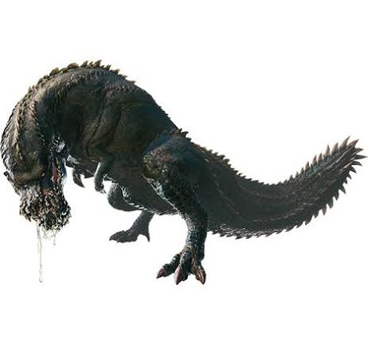
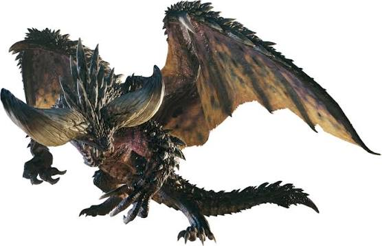
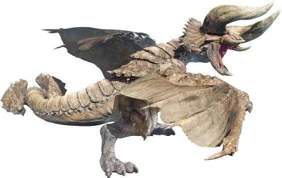

Los monstruos
En Monster Hunter: World, el jugador juega el rol de cazador, quien es enviado al Nuevo Mundo, un continente lleno de criaturas enormes que habitan ecosistemas vivos.
Los monstruos no solo pelean contra el cazador: también cazan entre ellos, migran entre zonas y defienden su territorio, lo que hace cada expedición se sienta diferente.
Conocer el comportamiento de cada criatura, sus puntos débiles y sus patrones de ataque es la clave para cazarlos, y los cazadores usan los rastros y huellas que dejan para localizarlos por el mapa.

Deviljho (Wyvern Bruto)
El Deviljho es un monstruo nómada que vaga por todas partes y puede aparecer en cualquier lugar. Su metabolismo elevado le obliga a estar constantemente en busca de presas, y su apetito puede llegar a provocar la extinción de especies enteras. El Deviljho es muy agresivo e intentará devorar a cualquier criatura que encuentre.
Ver más
Nergigante (Dragón Extinción)
Cada década el Nergigante viaja al Nuevo Mundo en la Migración de los Ancianos. La razón de esto es porque este monstruo depreda otros Dragones Ancianos, y es por ello que perseguía al Zorah Magdaros. Se sabe que es un monstruo increíblemente agresivo que atacará a cualquier criatura que vea. La habilidad principal del Nergigante es la de regenerar partes rotas para volverlas más fuertes de manera temporal, cubriéndolas de numerosas púas que vuelven sus ataques muy peligrosos. El Nergigante utiliza principalmente sus poderosas patas delanteras y sus cuernos para acabar con sus enemigos.
Ver más
Diablos (Wyvern Astado/Tirano del Desierto)
Junto con su pariente Monoblos, los Diablos son conocidos por ser wyverns extremadamente agresivos que atacan a cualquier criatura que traspase su territorio. Habitan únicamente en las zonas arenosas de los desiertos, donde se alimentan de cactus.
Ver más